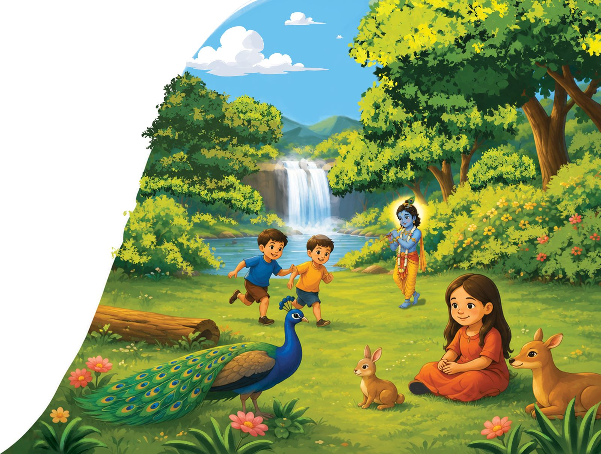

What did Jesus, Buddha, and Mirabai have in common?
What secret did Laozi discover watching water?
These nine teachers are from different times and places. They spoke different languages, practiced different religious traditions, and lived different lives. Yet when they looked deeply into life, they found the same treasure waiting there.
Love is who we are.
A peek inside
Meet the nine
Tap a teacher to open the book to their page. Each one gets two teachings in the book. Here's the first.
Made for reading aloud
Every teacher, the same gentle rhythm
Listen to what they said
A short saying from the teacher, in big, friendly type that's easy to read together.
Here's what I think they meant
A warm, plain explanation, the way a parent would talk it through at bedtime.
Now it's your turn
The book ends by asking your child what the wise teacher inside their own heart says.

Who it's for
For young seekers, and the grown-ups beside them
- Kids ages 6 to 10 who ask the big questions
- Families of any tradition, or none, who want to share wisdom from many
- Teachers, grandparents, godparents, and anyone looking for a gift with heart
- Bedtime. It was made for bedtime.
A note for grown-ups
All throughout history, in every corner of the planet, wise teachers have pointed to the same truths: that love is who we really are, that peace lives inside us, and that we're all connected… They woke up from the dream. They're the awakened ones.
This book shares their words with young seekers. Each teacher has two teachings, paired with a simple explanation your child can sit with. The pages are written to where you can read every word on the page, or you can skip the headings... hey, follow your heart with it.
Try to let the sayings breathe. And yes—these teachings are for you, too.
—Bob
From the back of the book
Curious questions
Why is Krishna blue?
The name Krishna means "dark," like a cloud full of rain. Artists paint him deep blue, the color of the sky and the ocean. Those are things that go on forever and hold everything inside them.
What's that bump on top of the Buddha's head?
It's a sign of his great wisdom. Artists give the Buddha a little crown-like bump to show that his mind had grown wide awake.
Why did Laozi ride an ox?
An old story says that when Laozi was very old, he rode an ox out of China. A gatekeeper begged him to write his wisdom down before he left. So he did, and that little book is the Tao Te Ching.
Why is a woman named Julian?
Nobody knows her real name! She lived beside St. Julian's Church in Norwich, so people called her Julian.
Were they all real people?
Yes! A few, like Krishna and Laozi, come to us through very old stories, and people wonder which parts happened the way they're told. Their teachings are real either way.
Do I have to pick just one?
Many families follow one tradition and still learn from others. You can ask your grown-ups what your family believes. These teachers would be happy just to see you being kind.
The details
About the book
Bob Peck
Bob is a writer, filmmaker, and producer based in Austin, Texas. He is the author of Original Sin Is A Lie and the director of The Kingdom Within. He wrote this book for his son, Bobby, who never stops asking such good questions.
Anum Khan
Anum is behind Drawphics, a branding and illustration studio. With over ten years of experience, she specializes in children's book illustration, creating characters and storytelling visuals that connect with young readers. She illustrated every page of this book.
What does the wise teacher inside your heart tell you?
Now it's your turn.
Close your eyes. Get very quiet. Listen to your own heart.
Hear the moment it's out